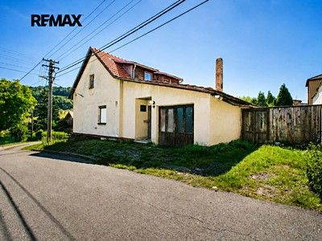
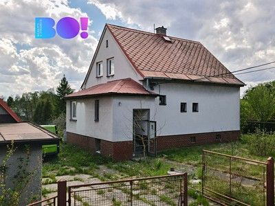

New listing
Prodej rodinného domu 150 m², pozemek 216 m²
Bohumín, Karviná
Not stated → 2,799,999 CZK
Original advert ↗Daily market update · 2026-11-03 · Ostrava + 15 km
Data limitation: Prices are advertised, not completed transaction prices. Disappeared adverts are NOT proof of sold or rented status. Search radius may be unverified for individual locations. Additional monthly rental charges are not reliably supplied in these search cards.
Bohumín, Karviná
Not stated → 2,799,999 CZK
Original advert ↗
Metylovice, Frýdek-Místek
Not stated → 3,100,000 CZK
Original advert ↗
Šenov, Ostrava-město
Not stated → 5,500,000 CZK
Original advert ↗
Horní Těrlicko, Karviná
Not stated → 16,600,000 CZK
Original advert ↗
Bludovice, Karviná
Not stated → 3,900,000 CZK
Original advert ↗
Hrušov, Ostrava-město
Not stated → 5,995,000 CZK
Original advert ↗
Horní Těrlicko, Karviná
Not stated → 6,690,000 CZK
Original advert ↗
Prostřední Bludovice, Karviná
Not stated → 6,390,000 CZK
Original advert ↗
Muglinov, Ostrava-město
Not stated → 9,800,000 CZK
Original advert ↗
Klimkovice, Ostrava-město
Not stated → 5,990,000 CZK
Original advert ↗
Pustějov, Nový Jičín
Not stated → 3,850,000 CZK
Original advert ↗
Vítkovice, Ostrava-město
Not stated → 4,999,000 CZK
Original advert ↗
Jistebník, Nový Jičín
Not stated → 5,100,000 CZK
Original advert ↗
Rychvald, Karviná
Not stated → 5,000,000 CZK
Original advert ↗
Petřvald, Karviná
Not stated → 9,710,000 CZK
Original advert ↗
Zábřeh, Ostrava-město
Not stated → 13,230,000 CZK
Original advert ↗
Albrechtice, Karviná
Not stated → 2,990,000 CZK
Original advert ↗
Prostřední Bludovice, Karviná
Not stated → 6,850,000 CZK
Original advert ↗Prodej domu Plzeňská, Ostrava - Stará Bělá, Moravskoslezský kraj
Not stated → 9,800,000 CZK
Original advert ↗Prodej domu Žižkovská, Ostrava - Nová Bělá, Moravskoslezský kraj
Not stated → 10,990,000 CZK
Original advert ↗Prodej domu Lipová, Šenov - Šenov u Ostravy, Moravskoslezský kraj
Not stated → 9,600,000 CZK
Original advert ↗Prodej domu Výdušná, Ostrava - Koblov, Moravskoslezský kraj
Not stated → 12,700,000 CZK
Original advert ↗Zlevněno prodej domu 180 m² s pozemkem 853 m² Hlavní, Ostrava - Hošťálkovice 9 400 000 Kč
Not stated → 9,400,000 CZK
Original advert ↗prodej domu 200 m² s pozemkem 296 m² Ostrava 13 800 000 Kč
Not stated → 13,800,000 CZK
Original advert ↗prodej domu 97 m² s pozemkem 1 m² Ostrava 3 749 000 Kč
Not stated → 3,749,000 CZK
Original advert ↗prodej domu 130 m² s pozemkem 779 m² Československé armády, Ostrava - Michálkovice 4 700 000 Kč
Not stated → 4,700,000 CZK
Original advert ↗prodej domu 200 m² s pozemkem 296 m² Ostrava 14 800 000 Kč
Not stated → 14,800,000 CZK
Original advert ↗prodej domu 420 m² s pozemkem 1 415 m² Kamarýtova, Ostrava - Michálkovice 5 790 000 Kč
Not stated → 5,790,000 CZK
Original advert ↗prodej domu 126 m² s pozemkem 739 m² Ostrava - Bartovice 13 990 000 Kč
Not stated → 13,990,000 CZK
Original advert ↗prodej domu 160 m² s pozemkem 1 263 m² Ostrava 12 990 000 Kč
Not stated → 12,990,000 CZK
Original advert ↗prodej vily 229 m² s pozemkem 1 161 m² Chalupníkova, Ostrava - Zábřeh 13 230 000 Kč
Not stated → 13,230,000 CZK
Original advert ↗prodej domu 200 m² s pozemkem 296 m² Ostrava 14 800 000 Kč
Not stated → 14,800,000 CZK
Original advert ↗Zlevněno prodej domu 220 m² s pozemkem 1 333 m² U Lípy, Ostrava - Radvanice 13 400 000 Kč
Not stated → 13,400,000 CZK
Original advert ↗prodej domu 1 267 m² s pozemkem 703 m² Nerudova, Ostrava - Vítkovice 47 900 000 Kč
Not stated → 47,900,000 CZK
Original advert ↗Zlevněno prodej domu 300 m² s pozemkem 768 m² Žabník, Ostrava - Koblov 4 413 619 Kč
Not stated → 4,413,619 CZK
Original advert ↗prodej domu 126 m² s pozemkem 243 m² 1. května, Ostrava - Polanka nad Odrou 8 700 000 Kč
Not stated → 8,700,000 CZK
Original advert ↗Zlevněno prodej domu 158 m² s pozemkem 525 m² Ostrava 10 990 000 Kč
Not stated → 10,990,000 CZK
Original advert ↗Zlevněno prodej domu 263 m² s pozemkem 536 m² Svatoplukova, Ostrava - Zábřeh 18 000 000 Kč
Not stated → 18,000,000 CZK
Original advert ↗prodej domu 114 m² Zelený vršek, Ostrava 12 150 000 Kč
Not stated → 12,150,000 CZK
Original advert ↗prodej domu 80 m² s pozemkem 2 383 m² Ostrava 1 990 000 Kč
Not stated → 1,990,000 CZK
Original advert ↗prodej domu 379 m² s pozemkem 5 322 m² K Pískovně, Ostrava - Bartovice 29 900 000 Kč
Not stated → 29,900,000 CZK
Original advert ↗prodej domu 125 m² s pozemkem 178 m² Žižkovská, Ostrava - Nová Bělá 10 990 000 Kč
Not stated → 10,990,000 CZK
Original advert ↗prodej domu 108 m² s pozemkem 803 m² Ostrava - Třebovice 10 985 000 Kč
Not stated → 10,985,000 CZK
Original advert ↗prodej domu 806 m² s pozemkem 428 m² Mitušova, Ostrava - Hrabůvka 48 000 000 Kč
Not stated → 48,000,000 CZK
Original advert ↗prodej domu 309 m² s pozemkem 875 m² Ostrava - Kunčičky 8 499 999 Kč
Not stated → 8,499,999 CZK
Original advert ↗prodej domu 131 m² s pozemkem 295 m² Vřesinská, Ostrava - Poruba 11 466 446 Kč
Not stated → 11,466,446 CZK
Original advert ↗prodej domu 195 m² s pozemkem 1 289 m² Mírná, Ostrava - Muglinov 8 290 000 Kč
Not stated → 8,290,000 CZK
Original advert ↗prodej domu 182 m² s pozemkem 776 m² Bednářská, Ostrava - Kunčice 12 300 000 Kč
Not stated → 12,300,000 CZK
Original advert ↗prodej domu 276 m² s pozemkem 3 426 m² Plzeňská, Ostrava - Stará Bělá 9 800 000 Kč
Not stated → 9,800,000 CZK
Original advert ↗prodej domu 87 m² s pozemkem 19 m² Hrázka, Ostrava - Pustkovec 8 595 000 Kč
Not stated → 8,595,000 CZK
Original advert ↗prodej domu 160 m² s pozemkem 207 m² Dr. Maye, Ostrava - Mariánské Hory 3 990 000 Kč
Not stated → 3,990,000 CZK
Original advert ↗prodej domu 244 m² s pozemkem 738 m² Rudná, Ostrava - Zábřeh 10 490 000 Kč
Not stated → 10,490,000 CZK
Original advert ↗prodej domu 87 m² s pozemkem 40 m² Ostrava 8 995 000 Kč
Not stated → 8,995,000 CZK
Original advert ↗Nové prodej domu 750 m² s pozemkem 734 m² Ostrava - Vítkovice 18 900 000 Kč
Not stated → 18,900,000 CZK
Original advert ↗Nové prodej domu 128 m² s pozemkem 421 m² Ostrava 13 499 000 Kč
Not stated → 13,499,000 CZK
Original advert ↗Prodej domu/vily, 240 m²
Not stated → 4,900,000 CZK
Original advert ↗Prodej domu/vily, 260 m²
Not stated → 12,000,000 CZK
Original advert ↗Prodej domu/vily, 120 m²
Not stated → 4,200,000 CZK
Original advert ↗Prodej domu/vily, 170 m²
Not stated → 5,800,000 CZK
Original advert ↗Prodej domu/vily, 296 m²
Not stated → 8,990,000 CZK
Original advert ↗Prodej domu/vily, 250 m²
Not stated → 12,360,000 CZK
Original advert ↗Prodej domu/vily, 120 m²
Not stated → 9,500,000 CZK
Original advert ↗Prodej domu/vily, 350 m²
Not stated → 11,350,000 CZK
Original advert ↗Prodej domu/vily, 110 m²
Not stated → 8,490,000 CZK
Original advert ↗Prodej domu/vily, 140 m²
Not stated → 4,390,000 CZK
Original advert ↗Prodej domu/vily, 86 m²
Not stated → 8,595,000 CZK
Original advert ↗Prodej domu/vily, 200 m²
Not stated → 5,490,000 CZK
Original advert ↗Prodej domu/vily, 127 m²
Not stated → 9,450,000 CZK
Original advert ↗Prodej domu/vily, 420 m²
Not stated → 10,300,000 CZK
Original advert ↗Prodej domu/vily, 220 m²
Not stated → 13,400,000 CZK
Original advert ↗Prodej domu/vily, 160 m²
Not stated → 3,350,000 CZK
Original advert ↗Prodej domu/vily, 132 m²
Not stated → 12,500,000 CZK
Original advert ↗Prodej domu/vily, 207 m²
Not stated → 11,200,000 CZK
Original advert ↗uzivně Prodej domu 457 m², Vřesina (ID 364-NP00040) ulice Zahrádkářská, Vřesina 12 500 000 Kč ( za nemovitost)
Not stated → 12,500,000 CZK
Original advert ↗u 87 m², Ostrava (ID 344-NP00776) ulice Hrázka, Ostrava – městská část Pustkovec 8 595 000 Kč ( za nemovitost)
Not stated → 8,595,000 CZK
Original advert ↗vně Prodej domu 87 m², Ostrava (ID 344-NP00777) Ostrava – městská část Pustkovec 8 995 000 Kč ( za nemovitost)
Not stated → 8,995,000 CZK
Original advert ↗B Prodej domu 344 m², Dolní Lhota (ID 344-NP00810) ulice Podjárky, Dolní Lhota 20 800 000 Kč ( za nemovitost)
Not stated → 20,800,000 CZK
Original advert ↗zivně Prodej domu 223 m², Dolní Lhota (ID 344-NP00813) ulice Slunná, Dolní Lhota 5 875 000 Kč ( za nemovitost)
Not stated → 5,875,000 CZK
Original advert ↗m², Ostrava (ID 364-NP00034) ulice Družební, Ostrava – městská část Krásné Pole 9 800 000 Kč ( za nemovitost)
Not stated → 9,800,000 CZK
Original advert ↗Exkluzivně Prodej domu 131 m², Šenov (ID 306-NP83738) ulice Pod Školou, Šenov 7 500 000 Kč ( za nemovitost)
Not stated → 7,500,000 CZK
Original advert ↗158 m², Ostrava (ID 344-NP00833) ulice Jezdiště, Ostrava – městská část Hrabová 4 950 000 Kč ( za nemovitost)
Not stated → 4,950,000 CZK
Original advert ↗rava (ID 364-NP00062) ulice Třebízského, Ostrava – městská část Slezská Ostrava 11 750 000 Kč ( za nemovitost)
Not stated → 11,750,000 CZK
Original advert ↗Ostrava (ID 306-NP83765) ulice Šenovská, Ostrava – městská část Slezská Ostrava 6 500 000 Kč ( za nemovitost)
Not stated → 6,500,000 CZK
Original advert ↗Ostrava (ID 306-NP83793) ulice Výdušná, Ostrava – městská část Slezská Ostrava 11 200 000 Kč ( za nemovitost)
Not stated → 11,200,000 CZK
Original advert ↗² Moravskoslezský kraj, Ostrava, Vřesinská Řadový, cihlová budova, 131 m² 11 466 446 Kč (za nemovitost) Detail
Not stated → 11,466,446 CZK
Original advert ↗avskoslezský kraj, Klimkovice, Rybniční Samostatný, cihlová budova, 224 m² 5 990 000 Kč (za nemovitost) Detail
Not stated → 5,990,000 CZK
Original advert ↗² Moravskoslezský kraj, Ostrava, Vřesinská Řadový, cihlová budova, 131 m² 11 466 446 Kč (za nemovitost) Detail
Not stated → 11,466,446 CZK
Original advert ↗vskoslezský kraj, Ostrava, Za Podjezdem Samostatný, cihlová budova, 125 m² 7 590 000 Kč (za nemovitost) Detail
Not stated → 7,590,000 CZK
Original advert ↗